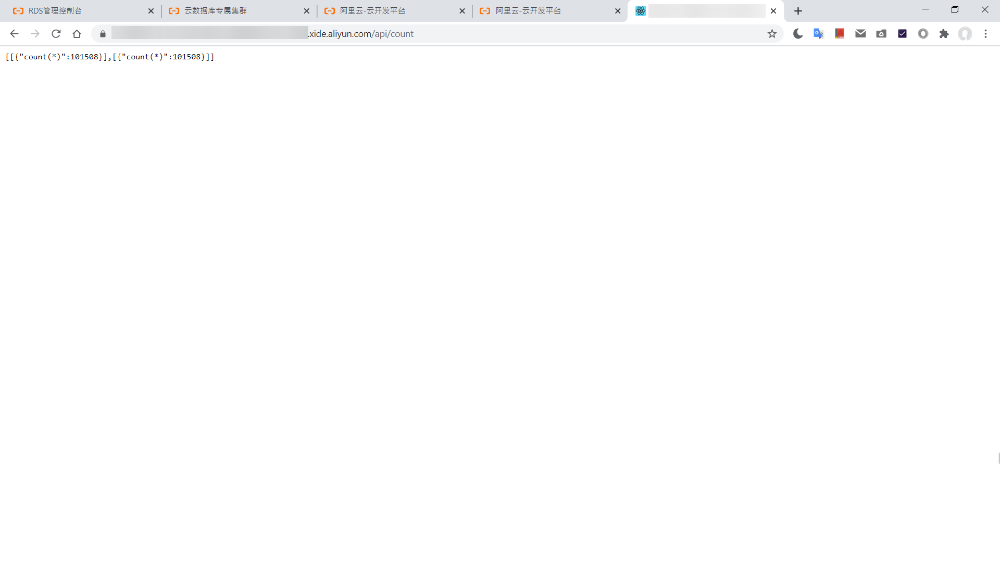
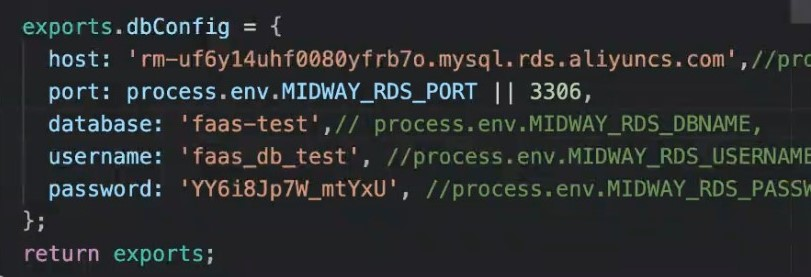
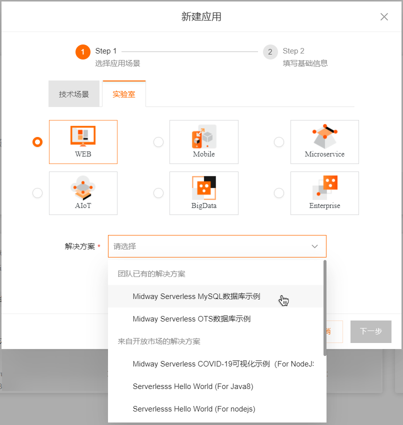

使用Midway Serverless及MySQL等数据库进行应用开发
作业
添加查看数据条数的功能（src/apis/index.ts）
('todo.count') |
配置API网关路径（f.yml)
count: |
访问开发服务器地址/api/count

若使用默认环境变量，To-do List是公用的，有需要可以自行购买RDS实例。
老师提供的示范实例：

【实际应用中要在应用管理中修改环境变量，切忌hard code】
学习笔记
准备工作
创建应用：实验 > Midway Serverless MySQL数据库示例 (依然是to-do list的例子)

安装开发依赖
npm i --registry=https://registry.npm.taobao.org |
启动应用
npm run dev |
项目架构介绍
f.yml：
路由匹配函数functions:
render:
handler: render.handler
events:
- apigw:
path: /*
list:
handler: todo.list
events:
- apigw:
path: /api/list
update:
...
remove:
...
add:
...src/apis/index.ts：
应用主函数（数据库操作封装）('todo.update')
async update() {...}
('todo.remove')
async remove() {...}
('todo.add')
async add() {...}从
configuration.ts注入数据库连接实例()
ctx;
()
db;中间件渲染
('render.handler', { middleware: [ 'fmw:staticFile' ]}) //前端静态文件（public/目录下）
async render() {
return 'Please refresh this page later.';
}src/apis/configuration.ts：
应用初次启动时的配置（由config.default.ts注入），例如创建数据库连接实例()
dbConfig
async onReady(container) { //验证数据库连接
const db = new Sequelize(this.dbConfig.database, this.dbConfig.username, this.dbConfig.password, {
host: this.dbConfig.host,
port: this.dbConfig.port,
...
});
...
}src/apis/config/config.default.ts：
应用环境配置，例如环境变量exports.dbConfig = {
host: process.env.MIDWAY_RDS_HOST,
port: process.env.MIDWAY_RDS_PORT || 3306,
database: process.env.MIDWAY_RDS_DBNAME,
username: process.env.MIDWAY_RDS_USERNAME,
password: process.env.MIDWAY_RDS_PASSWORD
};
OTS vs RDS
OTS：非关系型。按量（数据数量）付费
RDS (for MySQL, PostgreSQL, Redis etc.)：关系型。先行购买实例，按规格包年包月或按量付费。